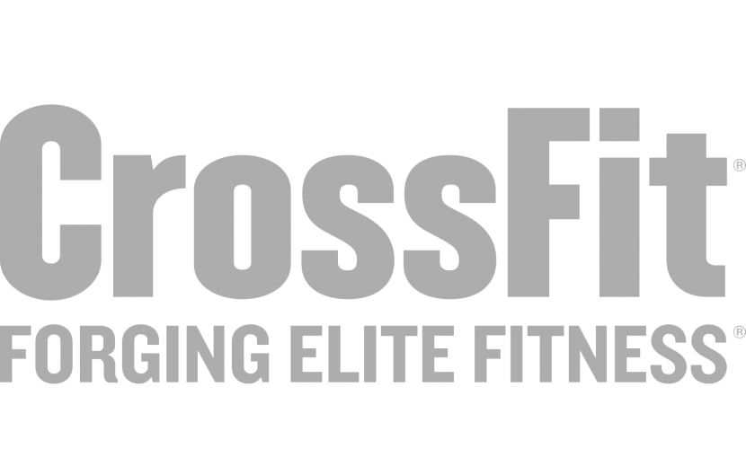
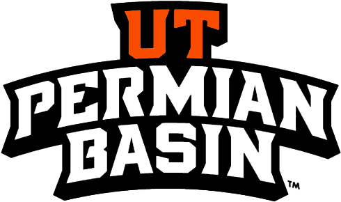
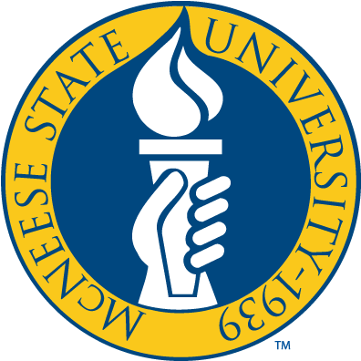

About Me
Bio
I am a full-stack software engineer and Technical Support Specialist based in Odessa, Texas. My technical journey spans from building dynamic web applications using Python, Django, .NET, and modern JavaScript frameworks like React, Next.js, and Angular, to diving into the infrastructure challenges of Distributed Database Systems and secure networking.
Education
- MS, Computer Science – University of Texas of The Permian Basin
- BSc, Molecular Biology – McNeese State University
- AAS, Web Development and Digital Media – JCCC
- AAS, Computer Information Systems – JCCC
- AAS, Computer Support Specialist – JCCC
- Certificate, Data Analytics – JCCC
Certifications
- CompTIA A+
- Cisco Networking
- Cisco Switching Routing and wireless essentials
- Google Project Management
Career Goals
My goal is to architect and build scalable, secure systems that solve real-world infrastructure problems, bridging the gap between theoretical research like analyzing the CAP theorem and hands-on software engineering.
Hardware & Tech
My curiosity extends beyond writing code into hardware configuration and system maintenance. I enjoy the hands-on aspect of computing, whether I am diagnosing and replacing a failing CPU cooling fan in my desktop, configuring BIOS settings like TPM 2.0 and Secure Boot for OS upgrades, or experimenting with AI video generation tools.
Fitness
I am dedicated to Crossfit and weight training and take an analytical approach to my physical fitness. I actively test and compare algorithm driven workout applications, such as Gravl, to continuously optimize my routines, track metrics, and manage my progression effectively.


